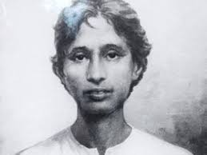
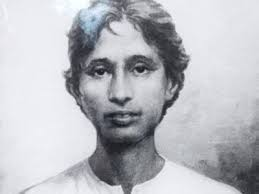
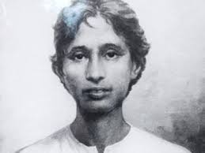

Known as the ‘City of Joy’, Kolkata holds an important place in the economy, politics and culture of India.
The capital of West Bengal, Kolkata is one of the four metropolitan cities in India and has retained its
quintessential charm despite modernization.
‘What Bengal thought today, India thought tomorrow’, is a famous line associated with the city for having
produced some of the greatest thinkers, artists, film makers and writers like Rabindranth Tagore,
Bankim Chandra Chattopadhyay and Sarat Chandra Chattopadhyay and Satyajit Ray. Indeed, ideas in Kolkata
in the fields of art, literature, cinema and theater have provided inspiration to rest of the country.
Earlier known as Calcutta, the city was founded in 1698 and served as the capital of British India till
1911 and then was shifted to Delhi. The city was renamed, Kolkata in 2001. Located along the banks of
river Hoogly, Kolkata is connected to Howrah by the iconic Howrah bridge.
The city’s colonial past is reflected in its architecture. Raj Bhavan, Writers’ Building and the
Victoria Memorial Hall(at the top of the page) are just some of the many buildings that hark back to a bygone era. Kolkata is
also home to some of the best educational institutes in the country.

Ideas of the famous social reformists Swami Vivekananda and Raja Ram Mohun Roy and Shahid Khudiram and Indian freedom fighter
Shubhas Chandra Bose were formed during their years of education in Kolkata. Mother Teresa spent a major
part of her life and also lies in eternal rest in the city at The Mother House.
It is among the 52 Shakti Peethas in the world. Goddess Kali is deeply revered and Durga Pooja is
celebrated in the grandest manner in Kolkata, especially at Kalighat’s Kali temple.
Kolkata has produced some finest sportsmen who have represented India like Sourav Ganguly and Leander Paes.
It is also home to some of the most popular international sports stadium like Eden Gardens and Salt Lake
stadium.
BEST PLACES TO STAY IN KOLKATA
Kolkata offers innumerable accommodation options to suit everyone’s budget and needs. Budget accommodation is available on Chowringhe Road and
Sudder Street. There are quite a few mid-range accommodation options near Dalhousie Square.
Apart from these, Kolkata also has innumerable luxury hotels in different parts of the city. There are
several luxury hotels near the International Airport as well.
BEST PLACES TO EAT IN KOLKATA
One can find eateries serving delicious authentic Bengali cuisine, Indian and other international cuisines.
Most of the famous eateries are over hundred-years-old. Park Street is the most famous place to eat at,
in Kolkata.
Kathi kebab is the most famous fast-food in Kolkata served best at the New Market area, Hogg Market and
Elgin Street. Almost every restaurant in the city serves sea food and Mughalai delicacies. Kolkata thrives
on street food like chops, rolls and puchka (paani puri or gol gappa) that are also extremely delicious
and are found throughout city.
Flurry’s on Park Street is considered one of the best Swiss bakeries here. Cafes in Kolkata are extremely
popular. Indian Coffee House is the most famous coffee shop where the intellectuals of the city meet.
Bengali milk sweets like rasagulla, misthi doi, sandesh, and ras-malai, are served at its best in Kolkata.
They are found almost everywhere in the city.
 Known as the ‘City of Joy’, Kolkata holds an important place in the economy, politics and culture of India.
The capital of West Bengal, Kolkata is one of the four metropolitan cities in India and has retained its
quintessential charm despite modernization.
Known as the ‘City of Joy’, Kolkata holds an important place in the economy, politics and culture of India.
The capital of West Bengal, Kolkata is one of the four metropolitan cities in India and has retained its
quintessential charm despite modernization. ‘What Bengal thought today, India thought tomorrow’, is a famous line associated with the city for having
produced some of the greatest thinkers, artists, film makers and writers like
‘What Bengal thought today, India thought tomorrow’, is a famous line associated with the city for having
produced some of the greatest thinkers, artists, film makers and writers like Earlier known as Calcutta, the city was founded in 1698 and served as the capital of British India till
1911 and then was shifted to Delhi. The city was renamed, Kolkata in 2001. Located along the banks of
river Hoogly, Kolkata is connected to Howrah by the iconic
Earlier known as Calcutta, the city was founded in 1698 and served as the capital of British India till
1911 and then was shifted to Delhi. The city was renamed, Kolkata in 2001. Located along the banks of
river Hoogly, Kolkata is connected to Howrah by the iconic 
 
Ideas of the famous social reformists

Ideas of the famous social reformists Kolkata has produced some finest sportsmen who have represented India like Sourav Ganguly and Leander Paes.
It is also home to some of the most popular international sports stadium like Eden Gardens and Salt Lake
stadium.
Kolkata has produced some finest sportsmen who have represented India like Sourav Ganguly and Leander Paes.
It is also home to some of the most popular international sports stadium like Eden Gardens and Salt Lake
stadium.
 Flurry’s on Park Street is considered one of the best Swiss bakeries here. Cafes in Kolkata are extremely
popular. Indian Coffee House is the most famous coffee shop where the intellectuals of the city meet.
Bengali milk sweets like rasagulla, misthi doi, sandesh, and ras-malai, are served at its best in Kolkata.
They are found almost everywhere in the city.
Flurry’s on Park Street is considered one of the best Swiss bakeries here. Cafes in Kolkata are extremely
popular. Indian Coffee House is the most famous coffee shop where the intellectuals of the city meet.
Bengali milk sweets like rasagulla, misthi doi, sandesh, and ras-malai, are served at its best in Kolkata.
They are found almost everywhere in the city.